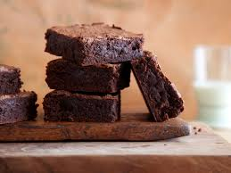

Recetas de la Abuela
Deliciosas recetas caceras
Brownies

Ingredientes:
- 125 gr. de chocolate.
- 125 gr. de mantequilla.
- 130 gr. de azúcar.
- 2 huevos.
- 50 gr. de harina.
- 1 cucharada de canela.
- 1 cucharada de vainilla.
Preparacion:
- Empezamos metiendo el chocolate en un cuenco que sirva para horno y lo metemos en el microondas hasta que esté derretido el todo. Colocamos en un cuenco y le agregamos la mantequilla en trocitos, para que se derrita.
- Encendemos ya el horno a 150º C para que se vaya precalentando.
- Cuando la mantequilla se ablande un poco, lo removemos todo con unas varillas eléctricas, o la batidora, para formar una especie de masa suave.
- Ahora ponemos los huevos en un cuenco junto con el azúcar, y empezamos a removerlo, hasta que se blanqueen del todo. Aseguraos de batirlos bien sin dejar grumos. Estos huevos los agregamos al chocolate fundido, junto con la harina, la canela y la vainilla.
- Removemos todo para mezclarlo tanto como nos sea posible hasta lograr una masa homogénea.
- Untamos con mantequilla una bandeja que sirva para horno, colocamos la masa y al horno por una media hora.
- Comprobad que se hace bien por dentro y sacar cuando esté lista.
- La dejamos reposar y a disfrutar.